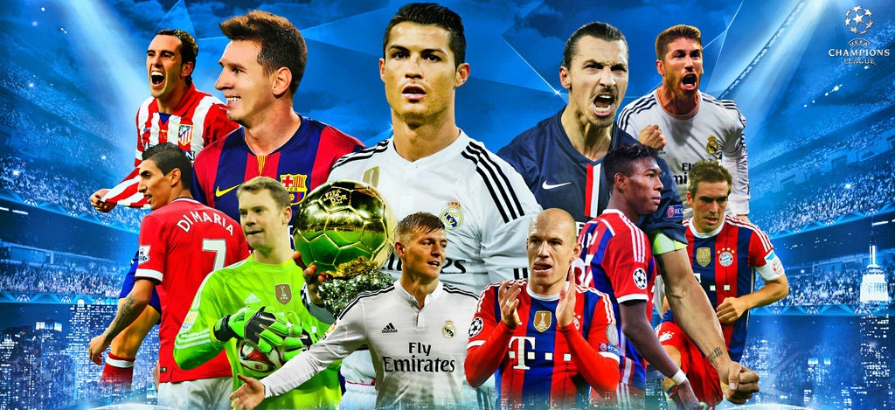

Uefa Champion League

The UEFA Champions League is an annual continental club football competition organised by the Union of European Football Associations (UEFA) and contested by top-division European clubs. It is one of the most prestigious tournaments in the world and the most prestigious club competition in European football, played by the national league champions (and, for some nations, one or more runners-up) of the strongest UEFA national associations. The UEFA Champions League final is the most watched annual sporting event worldwide. The final of the 2012–13 tournament had the highest TV ratings to date, drawing 360 million television viewers.
Introduced in 1992, the competition replaced the European Champion Clubs' Cup, or simply European Cup, which had run since 1955, adding a group stage to the competition and allowing multiple entrants from certain countries. The pre-1992 competition was initially a straight knockout tournament open only to the champion club of each country. During the 1990s, the format was expanded, incorporating a round-robin group stage to include clubs that finished runner-up of some nations' top-level league. While most of Europe's national leagues can still only enter their national league champion, Europe's strongest national leagues now provide up to five teams for the competition. Clubs that finish next-in-line in each nation's top level league, having not qualified for the UEFA Champions League competition, are eligible for the next-level UEFA Europa League competition.
In its present format, the UEFA Champions League begins in mid-July with three knockout qualifying rounds and a play-off round. The 10 surviving teams enter the group stage, joining 22 other teams qualified in advance. The 32 teams are drawn into eight groups of four teams and play each other in a double round-robin system. The eight group winners and eight runners-up proceed to the knockout phase that culminates with the final match in May. The winner of the UEFA Champions League qualifies for the UEFA Super Cup and the FIFA Club World Cup.
Real Madrid is the most successful club in the competition's history, having won the tournament 12 times, including its first five seasons. Spanish clubs have accumulated the highest number of victories (17 wins), followed by England and Italy (12 wins apiece). England has the largest number of different winning teams, with a total of 5 clubs having won the title. The competition has been won by 22 different clubs, 12 of which have won it more than once. The reigning champions are Real Madrid, who secured their twelfth title in the competition after defeating Juventus 4–1 in the 2017 final. Thus, they became the first team in the UEFA Champions League era to successfully defend their title.
History
The first pan-European tournament was the Challenge Cup, a competition between clubs in the Austro-Hungarian Empire. The Mitropa Cup, a competition modelled after the Challenge Cup, was created in 1927, an idea of Austrian Hugo Meisl, and played between Central European clubs.[10] In 1930, the Coupe des Nations (French: Nations Cup), the first attempt to create a cup for national champion clubs of Europe, was played and organised by Swiss club Servette. Held in Geneva, it brought together ten champions from across the continent. The tournament was won by Újpest of Hungary. Latin European nations came together to form the Latin Cup in 1949. After receiving reports from his journalists over the highly successful Campeonato Sudamericano de Campeones of 1948, Gabriel Hanot, editor of L'Équipe, began proposing the creation of a continent-wide tournament. After Stan Cullis declared Wolverhampton Wanderers "Champions of the World" following a successful run of friendlies in the 1950s, in particular a 3–2 friendly victory against Budapest Honvéd, Hanot finally managed to convince UEFA to put into practice such a tournament. It was conceived in Paris in 1955 as the European Champion Clubs' Cup.